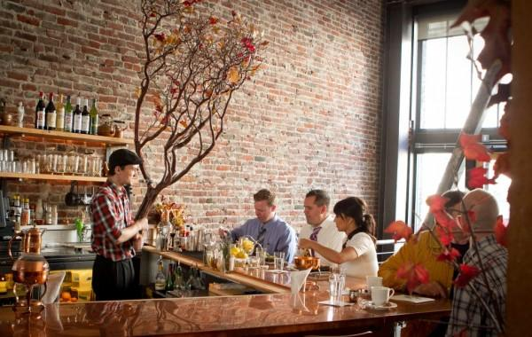

SF Restuarant Guide
My favorite places to eat in SF
Places to eat in Downtown

- Kin Khao - Great Thai.
- anraku - Great Japanese and sushi.
- Benu - For that special occasion.
Places to eat in Castro
- Mama JiJi's - Great Dimsum.
- Slurp - Good noodles.
- Starbelly - Good brunch.
Places to eat in Richmond
- Hong Kong Cafe - Great Dimsum.
- Brothers- Great Korean BBQ.
- Yummy Yummy- Good Pho.
Best places overall.
| Name |
Location |
| NOPA |
Pacific Heights |
| Sate Bird |
Downtown |
| Sons and Daughters |
Downtown |
Here is a link to recent honorable mentions.
This is the website that I am comparing mine to.
-
What makes their site look good are all the elements and perhaps the CCS. Everything looks blocked out and organized. Everything has a place and there are many references you can go to from the site. I reconize the basic HTML structure and some elements but most of it looks new to me.